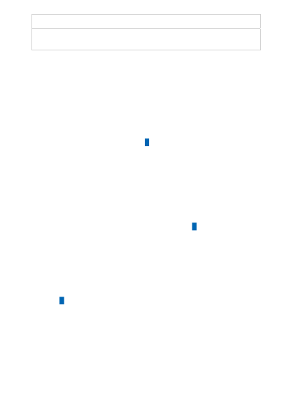

Feature
Azure OpenAI
Content filtering
Prompts and completions are evaluated against our content policy with
automated systems. High severity content will be filtered.
At Microsoft, we're committed to the advancement of AI driven by principles that put
people first. Generative models such as the ones available in Azure OpenAI have
significant potential benefits, but without careful design and thoughtful mitigations,
such models have the potential to generate incorrect or even harmful content. Microsoft
has made significant investments to help guard against abuse and unintended harm,
which includes requiring applicants to show well-defined use cases, incorporating
Microsoft’s principles for responsible AI use , building content filters to support
customers, and providing responsible AI implementation guidance to onboarded
customers.
How do I get access to Azure OpenAI?
Access is currently limited as we navigate high demand, upcoming product
improvements, and Microsoft’s commitment to responsible AI . For now, we're working
with customers with an existing partnership with Microsoft, lower risk use cases, and
those committed to incorporating mitigations.
More specific information is included in the application form. We appreciate your
patience as we work to responsibly enable broader access to Azure OpenAI.
Apply here for access:
Azure OpenAI Service gives customers advanced language AI with OpenAI GPT-4, GPT-
3, Codex, and DALL-E models with the security and enterprise promise of Azure. Azure
OpenAI co-develops the APIs with OpenAI, ensuring compatibility and a smooth
transition from one to the other.
Responsible AI
How do I get access to Azure OpenAI?
Comparing Azure OpenAI and OpenAI